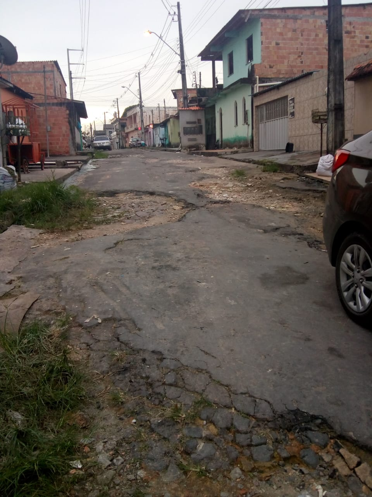

Diante de tantos problemas de infraestrutura urbana manauara, e ao próprios problemas pessoais do indivíduo, a população começa a tentar abstrair todas essas situações para não ficar pertubada com tantos problemas sociais. Dessa forma elas deixam de exigir seus direitos sociais por achar que irão ter muito trabalho ou que não terão os resultados esperados, devida a tanta burocracia e demora no agir por parte do governo. As pessoas então se isolam e buscam não perceber o que há ao redor, configurando um estilo de atitude chamada atitude blaseé. Viver em sociedade é também compartilhar e ver o que se pode melhorar não só para o indivíduo mas também para o grupo. Ter sua individualidade é natural e saudável para o ser humano, mas não fere o direito do outro de também viver uma vida boa.